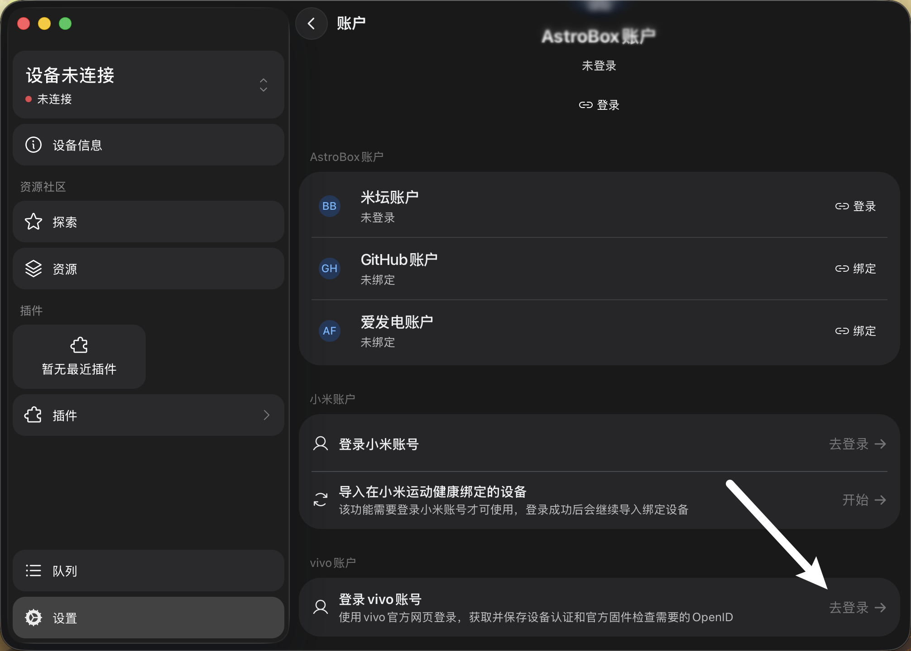
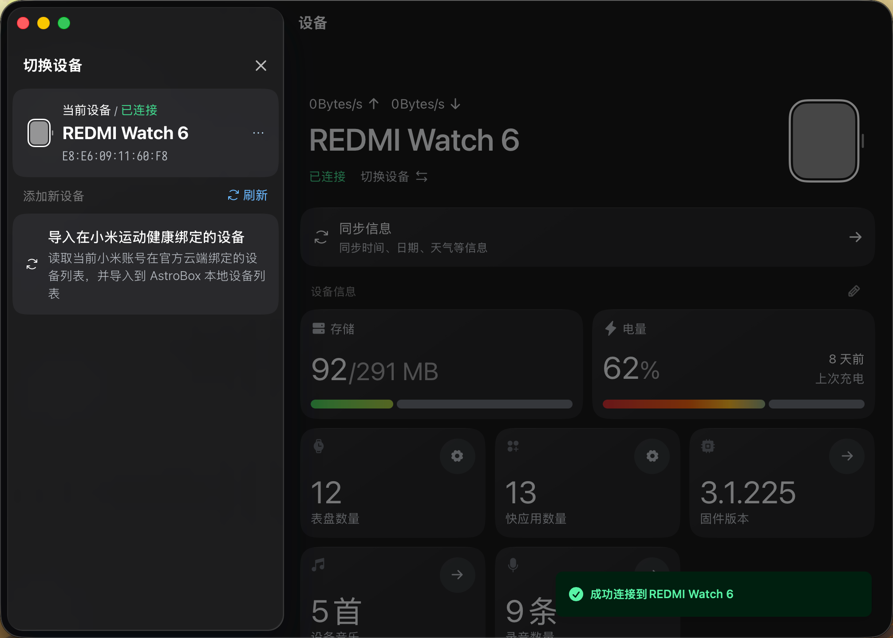

深夜折腾 vivo 手表表盘到三点——我是怎么被 AstroBox 救了的
新入的 vivo Watch GT 想换个好看的表盘，官方 APP 翻了半小时找不到满意的，搜到 AstroBox 却一登录就闪退。从踩坑到连上设备、刷表盘，这篇是我完整的实战记录。
凌晨一点四十七，我盯着手机屏幕发呆。
刚到手的 vivo Watch GT 放在充电座上，屏幕亮着官方默认的那个蓝色几何表盘——不是丑到不能看，但就是……没有灵魂。官方的 vivo 运动健康 APP 里翻了快四十分钟，不是要付费的就是那种"科技感"三个字写在脸上的模板货，找不到一款让我愿意天天抬手腕看的。
"要不试试第三方？"我翻了翻知乎历史搜索记录，想起上周在某个穿戴论坛看到有人聊 AstroBox——说是一个面向智能穿戴设备的辅助工具，小米、vivo、OPPO 几家都能连，资源库里的表盘和快应用比官方丰富得多。
第一次打开就闪退
搜索结果出来了，AstroBox 的官网排在前几条。我点进去扫了一眼首页，Android 版分两种下载——标准版本和带 WebView 的版本。我当时没多想，默认选了标准版本，下载、安装、打开。
界面挺清爽的，深色主题，底部几个大 Tab，看起来像那么回事。我点进账号设置，找到 vivo 账号那栏，点"去登录"——
然后就没有然后了。屏幕闪了一下，回到桌面。
我以为是偶发，重新点开 AstroBox。还是那个登录按钮，再点一次，又闪退。第三次，直接在打开页面就白屏了。
这时候我才开始怀疑是不是版本选错了。回到下载页面翻了翻AstroBox文档，才看到一个用红色标注的提示：90% 的 Android 闪退问题出在标准版本上，原因是系统 WebView 版本太低或者根本没装。我那台千元安卓机用的是国内定制 ROM，Google Play 和系统 WebView 确实从来没更新过。
果断卸载，换带 WebView 的版本重新装。这次打开 vivo 账号登录页面，转了两秒，正常出来了。

连上手表花了五分钟，其中四分钟在等蓝牙配对
登录 vivo 账号之后，AstroBox 自动把我账号下的设备同步到了列表里——包括那块刚拆封的 Watch GT。我回到主界面，点了左下角那个设备卡片，列表里出现了它的名字，旁边有个"连接"按钮。
点连接，手机弹出蓝牙配对请求。我点了"绑定"，然后……等。蓝牙连接这事儿有时候就是玄学，我之前连小米手环也是，第一次总要试个两三次。这次倒是一次就成了——手表震了一下，屏幕上弹出一个确认码，手机端同步显示了六位数字，核对一致后点确认，连接成功。

说实话那一刻我挺激动的。终于有一个工具能让我跳过官方 APP 那堆弯弯绕的付费门槛，直接动手折腾自己的手表了。
表盘资源多到什么程度？翻了二十分钟没重样
AstroBox 的探索页默认给我推了一批 vivo Watch GT 适配的表盘——从极简风的数字时钟到赛博朋克霓虹渐变、从自然摄影到像素风游戏界面，样式多到我二十分钟没翻到重复的。而且不是那种一看就粗制滥造的模板货，很多表盘做了动态效果，有的甚至支持显示步数、心率、电量这些实时数据。
挑了一个森林摄影的动态表盘点进去，详情页有创作者的介绍、资源说明和评论区。我留意到 AstroBox 2.1 之后放宽了评论权限——只要有 AstroBox 账号就能评论，不需要绑定米坛或者爱发电，这点比之前友好太多了。评论区里有人说这个表盘在深色表盘上显示更好，有人反馈 vivo Watch GT 的屏幕刷新率偶尔会掉帧，创作者还在下面逐条回复。
安装表盘的过程也简单，点详情页的"安装"按钮，等几十秒，手表震一下，新表盘就换好了。我抬手看了看，森林里的光斑在阳光下微微闪烁，比那个蓝色几何表盘顺眼多了。
顺手玩了玩主题配色——这功能有点东西
折腾完表盘，我在设置里瞎点，发现 AstroBox 2.1 还加了个挺有意思的功能：从图片生成主题配色。
以前我用别的 APP，主题色都是固定几种选，这次不一样——可以上传一张图，AstroBox 会从图片里自动提取主色调，生成一套完整的 Material Design 3 风格的调色板，深浅色两套都给你配好。我随手传了一张刚才在阳台拍的夜景，深蓝和紫色的色调立刻铺满了整个界面，顶部导航栏、按钮、标签全部跟着变了色，切换深浅色还有平滑的淡化过渡。
说实话这个功能我在别的桌面端工具上见过，但在手机端穿戴类 APP 里还是第一次碰到。设置入口也很好找，就在「设置 → 外观 → 主题色」，里面还有预设的红橙黄绿蓝紫灰几个基础色可以直接选，不想传图的话也能挑一个。
一点小建议和踩坑记录
写这篇的时候 AstroBox 已经用了三天，总结几个我觉得值得注意的点：
vivo Watch GT 目前还是实验性支持，意思是基础的设备连接和表盘安装能用，但快应用、固件刷写这些高级功能可能会不稳定。我这三天连了三次，没有掉过线，但看到社区里有人反馈固件刷到一半断了的，建议真要折腾固件的话多留意文档里的手动 OpenID 连接方案。
另外我的手机是 HyperOS（小米自家系统），刚装的时候 AstroBox 经常被后台杀掉，后来去设置里把省电策略改成"无限制"、后台弹出界面打开，就没再出过问题。MIUI 应该也类似，都是系统级别的后台限制。
写在三点零七分
现在手表上已经换好了一个像素风格的马里奥表盘，手机端用夜景配色的主题，整个 AstroBox 界面看起来比默认好看了不止一个档次。
说实话我之前对这类第三方辅助工具一直有点戒心——怕不安全、怕偷偷上传数据。但 AstroBox 文档里专门写了：vivo 账号数据不会被回传到服务器，也不会用账号凭据访问穿戴设备以外的任何服务。而且它还支持手动输入 OpenID 连接，完全绕开账号登录，如果我对隐私特别敏感的话可以走这条路。
折腾到现在差不多三点了，明天还要上班。把手表放回充电座，手机锁屏前最后看了一眼那个像素马里奥——它在月光下眨了眨眼，像是在谢我今晚没白熬。折腾完发现 AstroBox 这套东西在三个仓库都留了备份——GitHub、Gitee、GitCode，国内访问不畅时换个地址继续查就行。